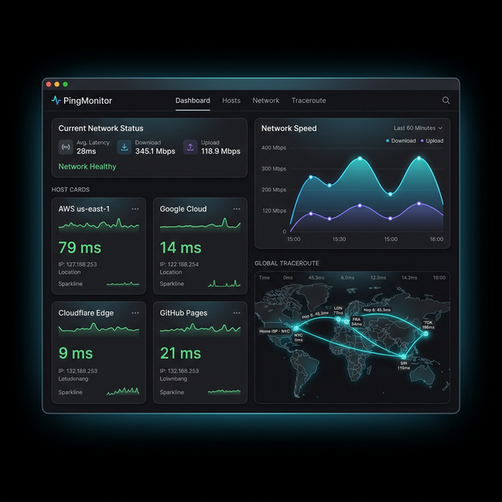

Visualize Your Journey
内置高保真全球地图。不仅能追踪跳点，还能基于地理位置渲染您的数据路径。从本地出发，跨越山海。
- ✨ Hop 0 定位 — 自动标记您的起始位置
- 🗺️ 高德/Apple 地图 — 精准渲染路由路径
- 📊 MTR 支持 — 单次授权，长效精准探测
PingMonitor 是一款原生的 macOS 监控工具，为您提供实时的并行主机探测与极富美感的专业数据可视化。

内置高保真全球地图。不仅能追踪跳点，还能基于地理位置渲染您的数据路径。从本地出发，跨越山海。